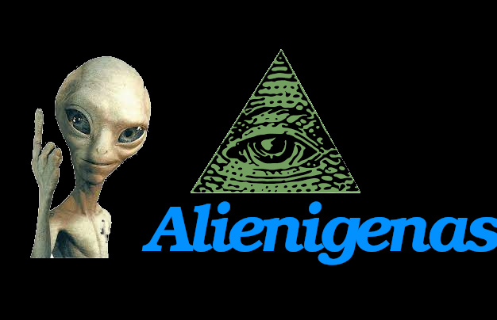
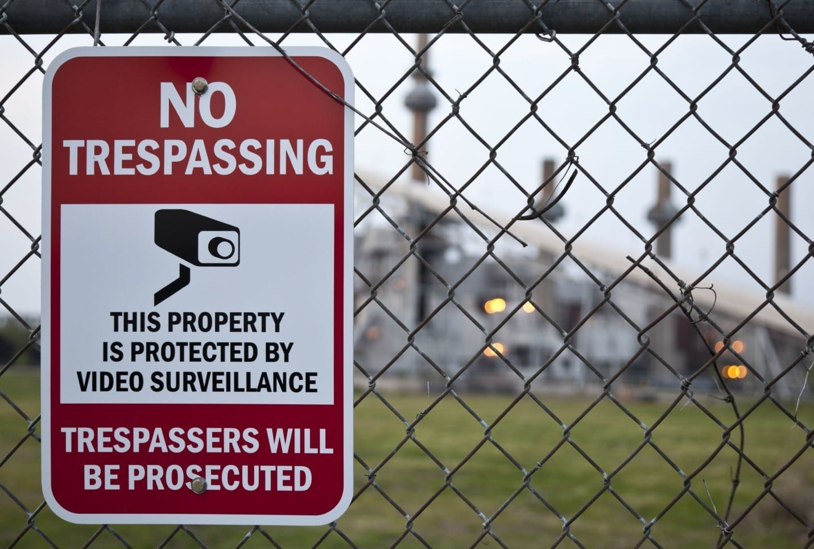

|  | ||||
|  |
Lugares Prohibidos |
| Nuestro planeta tierra tiene increíbles maravillas que merecen ser exploradas. Sin embargo, todavía hay lugares prohibidos. Parece mentira que en esta época y con la ciencia en pleno auge todavía hayan sitios secretos a los que no tenemos acceso. |
Isla Sentinel del Norte, India |
| Es una pequeña isla que le pertenece a la India. Es un territorio que destaca por tener un denso bosque, sus playas vírgenes y un paisaje de película. Sin embargo, es el hogar de tribus indígenas que han demostrado violencia contra los extranjeros. Han rechazado cualquier tipo de contacto con otras personas y es bien sabido que han asesinado a muchos visitantes. Sin duda, esta isla es un de los lugares prohibidos donde no vas a querer naufragar. |
La Isla Heard, Australia |
| La isla Heard es la más grande de Australia, tiene 41 glaciares y una fauna bastante variada que incluye pingüinos, focas y aves marinas. Fue declarada Patrimonio de la Humanidad en 1997. En el año 2000 la Universidad de Hawai reportó un río de lava que salía por un lado del pico Mawson. Se descubrió entones un volcán que permanece activo. Este es un lugar prohibido no solo por el peligro que representa el volcán sino también por tener unas condiciones climáticas muy adversas e inestables. Además, es muy difícil llegar, es necesario navegar durante al menos dos semanas, varios grupos científicos han organizado viajes para investigar la zona. Se necesita una logística y una preparación muy profesional para lograr adentrarse en esta maravilla de la naturaleza. |
Isla de la Quemada Grande, Brasil |
| Isla de Quemada Grande, conocida también como Isla de las Cobras, es un territorio insular de 43 hectáreas. Está ubicado en la costa de Brasil. La isla es inhóspita y está habitada por una de las especies de serpiente más letales del mundo, la Bothrops insularis. Se dice que hay una serpiente por cada 5 metros cuadrados. El gobierno de Brasil prohibió que cualquier persona pusiera un pie en esta isla. En algunas ocasiones se les da permiso de entrar a los científicos interesados en estudiar a esta serpiente venenosa. |
La cueva de Lascaux, Francia |
| Es un sistema de cuevas ubicadas al noroeste de Francia. Este es un santuario paleontológico porque alberga uno de los ejemplares del arte rupestre más famoso del mundo. Se cree que esta obra de arte tiene 17.000 años aproximadamente. En el año 2008 se prohibió la entrada al público debido al deterioro que sufrieron las pinturas y a un brote de hongos. El lugar es supervisado por un selecto grupo de científicos que se han encargado de restaurar las pinturas y preservar la cueva. |
La isla Poveglia, Italia |
| También llamada la isla de los muertos, está ubicada entre Venecia y Lido en el norte de Italia. La isla Poveglia es un de los lugares prohibidos por causa de su pasado oscuro (le hace honor a su apodo). Fue usada como un sitio de cuarentena se dice que albergó a más de 160.000 infectados por la Peste Bubónica. Se dice que el 50% de la tierra tiene restos humanos fosilizados. En esta isla también funcionó un hospital psiquiátrico donde torturaban a los pacientes. Todo el que ha intentado vivir en esta isla ha tenido experiencias desagradables y algunos dicen que paranormales. No es necesario preguntar por qué el gobierno decidió clausurar la isla. |
| Esta web Se Diseñado solo con HTML | Las Imagenes No son De Mi Propiedas Solo Son de Uso DIDACTICO | Los Enlaces a sitios externos No estar actualizados | Los Iconos no son relaes y nada de lo presente en este sitio web es con intencion de buscar seriedad |
| |
|
|